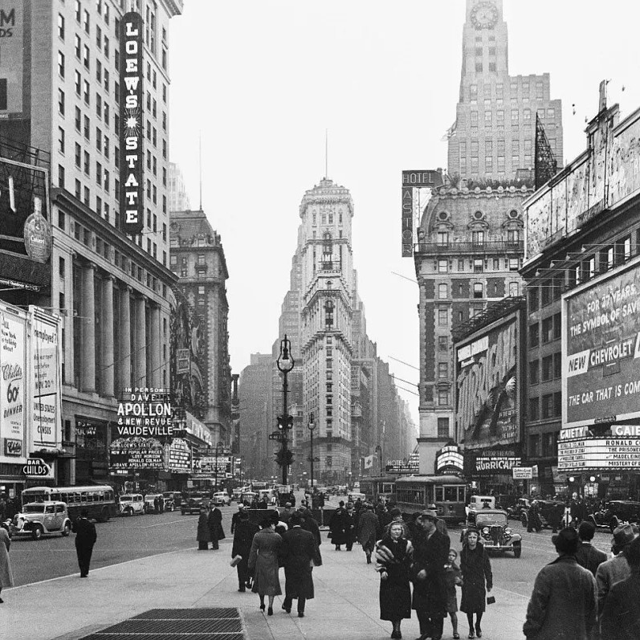

TIME SQUARE


I Giganti di Neon
Tra il caos di Times Square, il passo ritmato dei cavalli della polizia offre un ritorno al passato, trasformando il cuore frenetico di Manhattan in un palcoscenico di forza e silenziosa eleganza.
Occhiali sulla Folla
Sotto lo sguardo surreale di cani e gatti giganti in occhiali, la marea umana di Times Square scorre incessante, trasformando il cuore frenetico di Manhattan in un vivace e bizzarro palcoscenico a cielo aperto.
Incroci Notturni
All'ombra dei grattacieli illuminati, un semplice palo segnale di New York si trasforma in un faro di orientamento. Tra le luci viola dei neon e il buio profondo, i cartelli indicano con decisione la direzione da seguire nel labirinto urbano.

